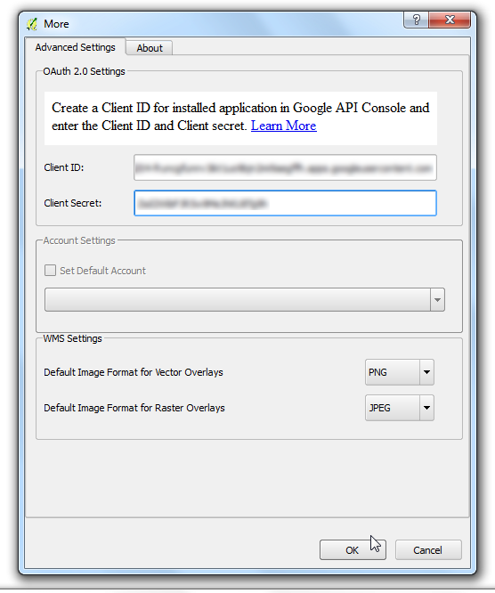
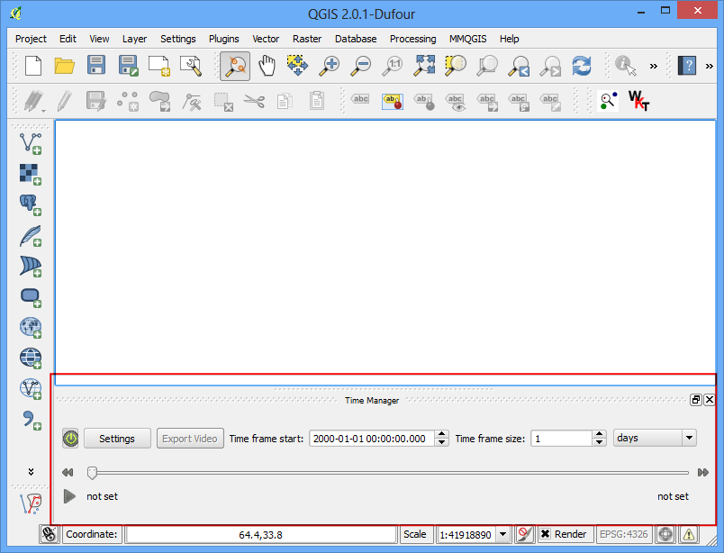

Menggunakan Plugins
[ Download PDF A4 Letter ]
Plugins dalam QGIS menambahkan fitur-fitur yang berguna pada software. Plugins ditulis oleh developer QGIS dan pemakai independen yang ingin menambah fungsi inti dari software. Plugins tersedia dalam QGIS untuk semua user.
Tinjauan Tugas
Dalam tutorial ini, anda akan belajar bagaimana mengaktifkan Plugins inti dan juga mengunduh serta menginstall Plugins Eksternal. Anda juga akan belajar bagaimana menemukan lokasi plugin dari QGIS saat plugins sudah terinstall
Prosedur
Plugins Inti
Plugins Inti sudah tersedia sebagai bagian dari instalasi standard QGIS. Untuk memakainya, anda hanya perlu mengaktifkan plugins tersebut.
Buka QGIS. Klik

Jikalau ini adalah pertama kalinya anda menggunakan QGIS, anda akan melihat banyak plugins yang terdaftar pada tab Installed. Hal ini disebabkan karena plugins ini adalah Plugins Inti dan terinstall saat penginstallan QGIS

Mari aktifkan satu dari beberapa Plugins. Beri tanda cek pada checkbox disebelah Plugin Spatial Query. Ini akan mengaktifkan plugin tersebut dan anda sudah bisa memakainya. Satu hal yang perlu dicatat bahwa plugins bisa masuk ke menu item di berbagai lokasi dan menciptakan panel dan toolbar yang baru. Terkadang sulit untuk tahu bagaimana menemukan tool yang baru saja diaktifkan. Suatu waktu hal ini dapat dilihat pada deskripsi plugin. Bila ada deskripsi *Category: Vector*. Itu menunjukkan bahwa plugin mungkin bisa ditemukan pada menu :guilabel:`Vector saat plugin diaktifkan. Klik Close.

Sekarang Spatial Query Plugin sudah aktif, anda dapat menuju ke untuk menggunakan fungsi-fungsi yang tersedia dari plugin

Plugins Eksternal
Plugins Eksternal tersedia pada QGIS Plugins Repository dan harus diinstal terlebih dahulu oleh user sebelum dapat digunakan. Salah satu cara mudah untuk melacak dan menginstall plugins ini adalah dengan menggunakan tool Plugin Manager
Buka QGIS. Klik

Klik pada tab Get more. Disini anda dapat lihat daftar Plugins.

Untuk tutorial ini. mari kita cari dan install plugin bernama ‘QuickQKT’. Saat anda mengetik qui pada kotak search, anda akan menemukan hasil pencarian di bawah, Klik QuickWKT. Berikutnya, klik tombol Install plugin untuk menginstall

Saat plugin selesai diunduh dan terinstall, anda akan melihat dialog konfirmasi

Jika diperhatikan, tidak ada informasi mengenai kategori plugin pada deskripsi. Hal ini menyulitkan dalam hal bagaimana mengakses plugin yang baru terinstall ini, Kebanyakan plugins terinstall pada menu Plugins di QGIS. Klik dan anda akan melihat plugin yang baru saja terinstall. Biasanya, plugins eksternal juga menginstall tombol pada toolbar Plugins . Anda dapat menggunakan tombol tersebut untuk menggunakan plugin

Plugins Eksperimental
Sekarang anda sudah tahu bagaimana menginstall dan menemukan sebuah External Plugin di QGIS. Mari jelajah opsi advanced. Terkadang anda mencari sebuah plugin yang spesifik, tapi plugin ini tidak dapat ditemukan di tab Get more. Hal ini mungkin terjadi karena plugin yang bersangkutan bertanda Experimental. Berikut bagaimana menginstall plugins ekperimental
Buka Plugin Manager dari . Klik tab Settings. Anda akan melihat opsi Show also experimental plugins. Klik checkboxnya untuk mengaktifkan plugin tersebut

Anda akan melihat tab baru bernama New. Plugins eksperimental yang baru aktif ini akan muncul di sini
Catatan
Tab New akan muncul secara temporer jika anda mengaktifkan plugins eksperimental. Disaat berikutnya anda membuka Plugin Manager, Plugins eksperimental akan muncul pada plugins reguler di tab Get more tab.

Mari install sebuah plugin bernama TimeManager. Klik pada nama plugin dan kemudian klik Install.

Sekarang ketika anda kembali pada Jendela utama QGIS, anda akan melihat Panel baru di bagian bawah kanvas. Panel ini dihasilkan oleh plugin TimeManager. Berikut adalah cara lain dari plugins untuk menambah fungsi yang berguna pada antarmuka user

Anda dapat mengaktifkan/menonaktifkan panel ini dari .